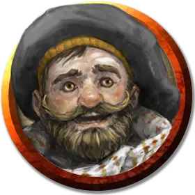

Волотамп «Воло» Геддарм
Volothamp «Volo» Geddarm
Средний Гуманоид (Человек), хаотично-добрый, именной НИП

Класс Доспеха 11
Хиты 31 (7к8)
Скорость 30 футов
| мод | спас | ||
|---|---|---|---|
| СИЛ | 9 | −1 | −1 |
| ЛОВ | 12 | +1 | +1 |
| ТЕЛ | 10 | +0 | +2 |
| мод | спас | ||
|---|---|---|---|
| ИНТ | 15 | +2 | +2 |
| МДР | 11 | +0 | +2 |
| ХАР | 16 | +3 | +3 |
Навыки Восприятие +2, Выживание +2, Выступление +7, История +4, Ловкость рук +3, Магия +4, Обман +5, Проницательность +2, Расследование +4, Убеждение +7, Уход за животными +4
Чувства пассивное Восприятие 12
Языки Общий, Дварфийский, Эльфийский
Опасность 1/4 (50 опыта)
Бонус мастерства +2
Особенности
Использование заклинаний. Воло является заклинателем 1-го уровня. Его базовой характеристикой является Интеллект (Сл спасброска от заклинаний 12, +4 к атакам заклинаниями). У него подготовлены следующие заклинания волшебника:
• Заговоры (неограниченно): дружба [friends], починка [mending], фокусы [prestidigitation];
• 1 уровень (2 ячейки): понимание языков [comprehend languages], обнаружение магии [detect magic], маскировка [disguise self].
Персонализация Воло.
Идеал. «У меня нет желания исследовать джунгли, затерянные города и подземелья. Дружелюбные таверны и непристойные празднества – больше подходят моему стилю».
Привязанность. «Планируете экспедицию? Вы обязательно должны купить копию моей последней книги «Справочник Воло по монстрам».
Слабость. «Моя склонность к потворству и пристрастие к насмешкам заработали мне несколько врагов. Я частенько порчу первое впечатление о себе».
Действия
Кинжал. . Рукопашная или дальнобойная атака оружием: +3 к попаданию, досягаемость 5 фт. или дистанция 20/60 фт., одна цель. Попадание: 3 (1к4 + 1) колющего урона.
Описание
Напыщенный путешественник Волотамп Геддарм пришёл на Чульт, чтобы доставить подписанные копии своей последней книги «Справочник Воло по монстрам». В дополнение к созданной семью торговыми князьями Порта Нянзару (которых он хорошо знает) аудиторий, Воло посещает местные таверны для продвижения своей работы, и персонажи могут встретиться с ним в какой-то момент в городе. Воло – это фонтан информации (не всё является истиной), но он ни при каких обстоятельствах не будет вступать в партию. Однако, он может позволить персонажам сопровождать его, пока он посещает каждого торгового князя по очереди.
Сам Воло более чем охотно делится 1к4 + 1 слухами из таблицы Слухов Джунглей в конце главы 1, которые он услышал с момента прибытия в Порту Нянзару.